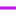

<!doctype html>
<html lang="en">
    <head>
        <meta charset="utf-8">
        <meta http-equiv="X-UA-Compatible" content="IE=edge">
        <meta name="viewport" content="initial-scale=1,user-scalable=no,maximum-scale=1,width=device-width">
        <meta name="mobile-web-app-capable" content="yes">
        <meta name="apple-mobile-web-app-capable" content="yes">
        <link rel="stylesheet" href="css/leaflet.css"><link rel="stylesheet" href="css/L.Control.Locate.min.css">
        <link rel="stylesheet" href="css/qgis2web.css"><link rel="stylesheet" href="css/fontawesome-all.min.css">
        <link rel="stylesheet" href="css/leaflet-control-geocoder.Geocoder.css">
        <link rel="stylesheet" href="css/leaflet-measure.css">
        <style>
        html, body, #map {
            width: 100%;
            height: 100%;
            padding: 0;
            margin: 0;
        }
        </style>
        <title></title>
    </head>
    <body>
        <div id="map">
        </div>
        <script src="js/qgis2web_expressions.js"></script>
        <script src="js/leaflet.js"></script><script src="js/L.Control.Locate.min.js"></script>
        <script src="js/leaflet.rotatedMarker.js"></script>
        <script src="js/leaflet.pattern.js"></script>
        <script src="js/leaflet-hash.js"></script>
        <script src="js/Autolinker.min.js"></script>
        <script src="js/rbush.min.js"></script>
        <script src="js/labelgun.min.js"></script>
        <script src="js/labels.js"></script>
        <script src="js/leaflet-control-geocoder.Geocoder.js"></script>
        <script src="js/leaflet-measure.js"></script>
        <script src="data/TOTALKRIMINALFIX_1.js"></script>
        <script src="data/Jalan_2.js"></script>
        <script src="data/BatasAdministrasi_3.js"></script>
        <script>
        var highlightLayer;
        function highlightFeature(e) {
            highlightLayer = e.target;

            if (e.target.feature.geometry.type === 'LineString') {
              highlightLayer.setStyle({
                color: '#ffff00',
              });
            } else {
              highlightLayer.setStyle({
                fillColor: '#ffff00',
                fillOpacity: 1
              });
            }
        }
        var map = L.map('map', {
            zoomControl:true, maxZoom:28, minZoom:1
        })
        var hash = new L.Hash(map);
        map.attributionControl.setPrefix('<a href="https://github.com/tomchadwin/qgis2web" target="_blank">qgis2web</a> &middot; <a href="https://leafletjs.com" title="A JS library for interactive maps">Leaflet</a> &middot; <a href="https://qgis.org">QGIS</a>');
        var autolinker = new Autolinker({truncate: {length: 30, location: 'smart'}});
        L.control.locate({locateOptions: {maxZoom: 19}}).addTo(map);
        var measureControl = new L.Control.Measure({
            position: 'topleft',
            primaryLengthUnit: 'meters',
            secondaryLengthUnit: 'kilometers',
            primaryAreaUnit: 'sqmeters',
            secondaryAreaUnit: 'hectares'
        });
        measureControl.addTo(map);
        document.getElementsByClassName('leaflet-control-measure-toggle')[0]
        .innerHTML = '';
        document.getElementsByClassName('leaflet-control-measure-toggle')[0]
        .className += ' fas fa-ruler';
        var bounds_group = new L.featureGroup([]);
        function setBounds() {
            if (bounds_group.getLayers().length) {
                map.fitBounds(bounds_group.getBounds());
            }
        }
        map.createPane('pane_GoogleHybrid_0');
        map.getPane('pane_GoogleHybrid_0').style.zIndex = 400;
        var layer_GoogleHybrid_0 = L.tileLayer('https://mt1.google.com/vt/lyrs=y&x={x}&y={y}&z={z}', {
            pane: 'pane_GoogleHybrid_0',
            opacity: 1.0,
            attribution: '<a href="https://www.google.at/permissions/geoguidelines/attr-guide.html">Map data ©2015 Google</a>',
            minZoom: 1,
            maxZoom: 28,
            minNativeZoom: 0,
            maxNativeZoom: 20
        });
        layer_GoogleHybrid_0;
        map.addLayer(layer_GoogleHybrid_0);
        function pop_TOTALKRIMINALFIX_1(feature, layer) {
            layer.on({
                mouseout: function(e) {
                    for (i in e.target._eventParents) {
                        e.target._eventParents[i].resetStyle(e.target);
                    }
                },
                mouseover: highlightFeature,
            });
            var popupContent = '<table>\
                    <tr>\
                        <th scope="row">TINGKAT KERAWANAN</th>\
                        <td>' + (feature.properties['KERAWANAN'] !== null ? autolinker.link(feature.properties['KERAWANAN'].toLocaleString()) : '') + '</td>\
                    </tr>\
                    <tr>\
                        <th scope="row">KECAMATAN</th>\
                        <td>' + (feature.properties['KECAMATAN'] !== null ? autolinker.link(feature.properties['KECAMATAN'].toLocaleString()) : '') + '</td>\
                    </tr>\
                    <tr>\
                        <th scope="row">KOTA</th>\
                        <td>' + (feature.properties['KOTA'] !== null ? autolinker.link(feature.properties['KOTA'].toLocaleString()) : '') + '</td>\
                    </tr>\
                    <tr>\
                        <th scope="row">PROVINSI</th>\
                        <td>' + (feature.properties['PROVINSI'] !== null ? autolinker.link(feature.properties['PROVINSI'].toLocaleString()) : '') + '</td>\
                    </tr>\
                </table>';
            layer.bindPopup(popupContent, {maxHeight: 400});
        }

        function style_TOTALKRIMINALFIX_1_0(feature) {
            switch(String(feature.properties['KERAWANAN'])) {
                case 'RENDAH':
                    return {
                pane: 'pane_TOTALKRIMINALFIX_1',
                stroke: false, 
                fill: true,
                fillOpacity: 1,
                fillColor: 'rgba(71,227,47,1.0)',
                interactive: true,
            }
                    break;
                case 'SANGAT RENDAH':
                    return {
                pane: 'pane_TOTALKRIMINALFIX_1',
                stroke: false, 
                fill: true,
                fillOpacity: 1,
                fillColor: 'rgba(145,203,168,1.0)',
                interactive: true,
            }
                    break;
                case 'SANGAT TINGGI':
                    return {
                pane: 'pane_TOTALKRIMINALFIX_1',
                stroke: false, 
                fill: true,
                fillOpacity: 1,
                fillColor: 'rgba(215,25,28,1.0)',
                interactive: true,
            }
                    break;
                case 'SEDANG':
                    return {
                pane: 'pane_TOTALKRIMINALFIX_1',
                stroke: false, 
                fill: true,
                fillOpacity: 1,
                fillColor: 'rgba(255,255,1,1.0)',
                interactive: true,
            }
                    break;
                case 'TINGGI':
                    return {
                pane: 'pane_TOTALKRIMINALFIX_1',
                stroke: false, 
                fill: true,
                fillOpacity: 1,
                fillColor: 'rgba(245,144,83,1.0)',
                interactive: true,
            }
                    break;
            }
        }
        map.createPane('pane_TOTALKRIMINALFIX_1');
        map.getPane('pane_TOTALKRIMINALFIX_1').style.zIndex = 401;
        map.getPane('pane_TOTALKRIMINALFIX_1').style['mix-blend-mode'] = 'normal';
        var layer_TOTALKRIMINALFIX_1 = new L.geoJson(json_TOTALKRIMINALFIX_1, {
            attribution: '',
            interactive: true,
            dataVar: 'json_TOTALKRIMINALFIX_1',
            layerName: 'layer_TOTALKRIMINALFIX_1',
            pane: 'pane_TOTALKRIMINALFIX_1',
            onEachFeature: pop_TOTALKRIMINALFIX_1,
            style: style_TOTALKRIMINALFIX_1_0,
        });
        bounds_group.addLayer(layer_TOTALKRIMINALFIX_1);
        map.addLayer(layer_TOTALKRIMINALFIX_1);
        function pop_Jalan_2(feature, layer) {
            layer.on({
                mouseout: function(e) {
                    for (i in e.target._eventParents) {
                        e.target._eventParents[i].resetStyle(e.target);
                    }
                },
                mouseover: highlightFeature,
            });
            var popupContent = '<table>\
                    <tr>\
                        <td colspan="2">' + (feature.properties['NAMRJL'] !== null ? autolinker.link(feature.properties['NAMRJL'].toLocaleString()) : '') + '</td>\
                    </tr>\
                    <tr>\
                        <td colspan="2">' + (feature.properties['KONRJL'] !== null ? autolinker.link(feature.properties['KONRJL'].toLocaleString()) : '') + '</td>\
                    </tr>\
                    <tr>\
                        <td colspan="2">' + (feature.properties['MATRJL'] !== null ? autolinker.link(feature.properties['MATRJL'].toLocaleString()) : '') + '</td>\
                    </tr>\
                    <tr>\
                        <td colspan="2">' + (feature.properties['FGSRJL'] !== null ? autolinker.link(feature.properties['FGSRJL'].toLocaleString()) : '') + '</td>\
                    </tr>\
                    <tr>\
                        <td colspan="2">' + (feature.properties['UTKRJL'] !== null ? autolinker.link(feature.properties['UTKRJL'].toLocaleString()) : '') + '</td>\
                    </tr>\
                    <tr>\
                        <td colspan="2">' + (feature.properties['TOLRJL'] !== null ? autolinker.link(feature.properties['TOLRJL'].toLocaleString()) : '') + '</td>\
                    </tr>\
                    <tr>\
                        <td colspan="2">' + (feature.properties['WLYRJL'] !== null ? autolinker.link(feature.properties['WLYRJL'].toLocaleString()) : '') + '</td>\
                    </tr>\
                    <tr>\
                        <td colspan="2">' + (feature.properties['AUTRJL'] !== null ? autolinker.link(feature.properties['AUTRJL'].toLocaleString()) : '') + '</td>\
                    </tr>\
                    <tr>\
                        <td colspan="2">' + (feature.properties['KLSRJL'] !== null ? autolinker.link(feature.properties['KLSRJL'].toLocaleString()) : '') + '</td>\
                    </tr>\
                    <tr>\
                        <td colspan="2">' + (feature.properties['SPCRJL'] !== null ? autolinker.link(feature.properties['SPCRJL'].toLocaleString()) : '') + '</td>\
                    </tr>\
                    <tr>\
                        <td colspan="2">' + (feature.properties['JPARJL'] !== null ? autolinker.link(feature.properties['JPARJL'].toLocaleString()) : '') + '</td>\
                    </tr>\
                    <tr>\
                        <td colspan="2">' + (feature.properties['ARHRJL'] !== null ? autolinker.link(feature.properties['ARHRJL'].toLocaleString()) : '') + '</td>\
                    </tr>\
                    <tr>\
                        <td colspan="2">' + (feature.properties['STARJL'] !== null ? autolinker.link(feature.properties['STARJL'].toLocaleString()) : '') + '</td>\
                    </tr>\
                    <tr>\
                        <td colspan="2">' + (feature.properties['KLLRJL'] !== null ? autolinker.link(feature.properties['KLLRJL'].toLocaleString()) : '') + '</td>\
                    </tr>\
                    <tr>\
                        <td colspan="2">' + (feature.properties['MEDRJL'] !== null ? autolinker.link(feature.properties['MEDRJL'].toLocaleString()) : '') + '</td>\
                    </tr>\
                    <tr>\
                        <td colspan="2">' + (feature.properties['LOCRJL'] !== null ? autolinker.link(feature.properties['LOCRJL'].toLocaleString()) : '') + '</td>\
                    </tr>\
                    <tr>\
                        <td colspan="2">' + (feature.properties['JARRJL'] !== null ? autolinker.link(feature.properties['JARRJL'].toLocaleString()) : '') + '</td>\
                    </tr>\
                    <tr>\
                        <td colspan="2">' + (feature.properties['FCODE'] !== null ? autolinker.link(feature.properties['FCODE'].toLocaleString()) : '') + '</td>\
                    </tr>\
                    <tr>\
                        <td colspan="2">' + (feature.properties['REMARK'] !== null ? autolinker.link(feature.properties['REMARK'].toLocaleString()) : '') + '</td>\
                    </tr>\
                    <tr>\
                        <td colspan="2">' + (feature.properties['SRS_ID'] !== null ? autolinker.link(feature.properties['SRS_ID'].toLocaleString()) : '') + '</td>\
                    </tr>\
                    <tr>\
                        <td colspan="2">' + (feature.properties['LCODE'] !== null ? autolinker.link(feature.properties['LCODE'].toLocaleString()) : '') + '</td>\
                    </tr>\
                    <tr>\
                        <td colspan="2">' + (feature.properties['METADATA'] !== null ? autolinker.link(feature.properties['METADATA'].toLocaleString()) : '') + '</td>\
                    </tr>\
                    <tr>\
                        <td colspan="2">' + (feature.properties['SHAPE_Leng'] !== null ? autolinker.link(feature.properties['SHAPE_Leng'].toLocaleString()) : '') + '</td>\
                    </tr>\
                </table>';
            layer.bindPopup(popupContent, {maxHeight: 400});
        }

        function style_Jalan_2_0(feature) {
            switch(String(feature.properties['REMARK'])) {
                case 'Jalan Arteri':
                    return {
                pane: 'pane_Jalan_2',
                opacity: 1,
                color: 'rgba(255,170,1,1.0)',
                dashArray: '',
                lineCap: 'square',
                lineJoin: 'bevel',
                weight: 3.0,
                fillOpacity: 0,
                interactive: true,
            }
                    break;
                case 'Jalan Kolektor':
                    return {
                pane: 'pane_Jalan_2',
                opacity: 1,
                color: 'rgba(187,28,235,1.0)',
                dashArray: '',
                lineCap: 'square',
                lineJoin: 'bevel',
                weight: 3.0,
                fillOpacity: 0,
                interactive: true,
            }
                    break;
            }
        }
        map.createPane('pane_Jalan_2');
        map.getPane('pane_Jalan_2').style.zIndex = 402;
        map.getPane('pane_Jalan_2').style['mix-blend-mode'] = 'normal';
        var layer_Jalan_2 = new L.geoJson(json_Jalan_2, {
            attribution: '',
            interactive: true,
            dataVar: 'json_Jalan_2',
            layerName: 'layer_Jalan_2',
            pane: 'pane_Jalan_2',
            onEachFeature: pop_Jalan_2,
            style: style_Jalan_2_0,
        });
        bounds_group.addLayer(layer_Jalan_2);
        map.addLayer(layer_Jalan_2);
        function pop_BatasAdministrasi_3(feature, layer) {
            layer.on({
                mouseout: function(e) {
                    for (i in e.target._eventParents) {
                        e.target._eventParents[i].resetStyle(e.target);
                    }
                },
                mouseover: highlightFeature,
            });
            var popupContent = '<table>\
                    <tr>\
                        <td colspan="2">' + (feature.properties['KECAMATAN'] !== null ? autolinker.link(feature.properties['KECAMATAN'].toLocaleString()) : '') + '</td>\
                    </tr>\
                    <tr>\
                        <td colspan="2">' + (feature.properties['KOTA'] !== null ? autolinker.link(feature.properties['KOTA'].toLocaleString()) : '') + '</td>\
                    </tr>\
                    <tr>\
                        <td colspan="2">' + (feature.properties['PROVINSI'] !== null ? autolinker.link(feature.properties['PROVINSI'].toLocaleString()) : '') + '</td>\
                    </tr>\
                </table>';
            layer.bindPopup(popupContent, {maxHeight: 400});
        }

        function style_BatasAdministrasi_3_0() {
            return {
                pane: 'pane_BatasAdministrasi_3',
                opacity: 1,
                color: 'rgba(0,0,0,1.0)',
                dashArray: '',
                lineCap: 'square',
                lineJoin: 'bevel',
                weight: 1.0,
                fillOpacity: 0,
                interactive: true,
            }
        }
        map.createPane('pane_BatasAdministrasi_3');
        map.getPane('pane_BatasAdministrasi_3').style.zIndex = 403;
        map.getPane('pane_BatasAdministrasi_3').style['mix-blend-mode'] = 'normal';
        var layer_BatasAdministrasi_3 = new L.geoJson(json_BatasAdministrasi_3, {
            attribution: '',
            interactive: true,
            dataVar: 'json_BatasAdministrasi_3',
            layerName: 'layer_BatasAdministrasi_3',
            pane: 'pane_BatasAdministrasi_3',
            onEachFeature: pop_BatasAdministrasi_3,
            style: style_BatasAdministrasi_3_0,
        });
        bounds_group.addLayer(layer_BatasAdministrasi_3);
        map.addLayer(layer_BatasAdministrasi_3);
        var osmGeocoder = new L.Control.Geocoder({
            collapsed: true,
            position: 'topleft',
            text: 'Search',
            title: 'Testing'
        }).addTo(map);
        document.getElementsByClassName('leaflet-control-geocoder-icon')[0]
        .className += ' fa fa-search';
        document.getElementsByClassName('leaflet-control-geocoder-icon')[0]
        .title += 'Search for a place';
        var baseMaps = {};
        L.control.layers(baseMaps,{' Batas Administrasi': layer_BatasAdministrasi_3,'Jalan<br /><table><tr><td style="text-align: center;"></td><td>Jalan Arteri</td></tr><tr><td style="text-align: center;"></td><td>Jalan Kolektor</td></tr></table>': layer_Jalan_2,'TOTAL KRIMINAL FIX<br /><table><tr><td style="text-align: center;"></td><td>RENDAH</td></tr><tr><td style="text-align: center;"></td><td>SANGAT RENDAH</td></tr><tr><td style="text-align: center;"></td><td>SANGAT TINGGI</td></tr><tr><td style="text-align: center;"></td><td>SEDANG</td></tr><tr><td style="text-align: center;"></td><td>TINGGI</td></tr></table>': layer_TOTALKRIMINALFIX_1,"Google Hybrid": layer_GoogleHybrid_0,}).addTo(map);
        setBounds();
        </script>
    </body>
</html>
